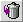

| Szöveg/Ikon |
Név/Alternatív szöveg |
Mûvelet |
|
| Mappa menü | Mutatja az aktuális mappa nevét, és az olvasatlan/olvasott levelek számát. Át is léphetünk vele más mappákba |
|
| Új üzenet | Új levél írása. |
 | Mappák | Mappák megtekintése, szerkesztése, törlése, új mappák létrehozása. |
|
| Címjegyzék | Címtár(ak) szerkesztése. |
|
| Szûrõ beállítások | A bejövõ levelek szûrésének beállításai. |
|
| POP3 levelek letöltése | Levelek azonnali letöltése POP3 fiókokból. |
|
| Emelt szintû keresés | Részletesen kereshetünk az üzenetek között. |
|
| Frissít | Frissíti az aktuális oldalt. |
|
 | Szemetesbe | A kijelölt leveleket a kukába helyezi át. |
|
| Naptár | Belépés a naptárba, ahol feljegyzések, emlékeztetõk állíthatók be. |
 | Beállítások | Itt végezhetõk el a különbözõ személyre szóló beállítások. |
 | Kilépés | Kilép az OpenWebMailból |
|
| Célpont menü | Mozgatja vagy másolja a kijelölt leveleket a választott mappába. |